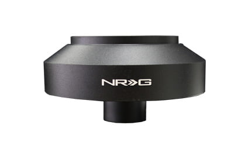

-
Looking at the nrg catalog, and the g35/z33 wheels hubs have a protruding splined section, this would work well to clear the plastic cowling on the z31 if it's able to mate up… anyone know? -
 -
My s13 hub cleared my plastic cowling. Very slight rubbing* but not enough to make me think twice.86na - BlueZ
Shiro #366 - Kouki Monster
85t - Mr Tickles -
No prob with my Momo hub and wheel.
86na
88t -
I am specifically asking about 350z hubs, is your momo for s13?newsieone;349442 wrote: No prob with my Momo hub and wheel.
86na
88t -
No, it is specific to the Z31. I just checked the Momo site and the adapter for a 350Z is part #3516. This adapter, as well as other aftermarket hubs convert to 6 bolt wheels. They all appear to be usable for Momo, Sparco, Nardi, etc.
FYI for the Z31 crowd: the Momo hub adapter for 84-89 is part #3507.
86na w/Momo Combat wheel, Combat Evo shift
88t -
I hope this isn't considered a thread hi-jack nor an intrusion. If so, it is NOT the intent.
But … don't 350Z steering wheels have an "air bag"?
IF and G-E didn't indicate nor imply that this was the intent of his original post.
What are the ramifications (things to consider - electrical connections, air bag, etc … ) if one were to "fit" a 350z steering wheel onto/into a z31? -
In most jurisdictions you aren't allowed to modify the safety devices in your car, so you can't legally remove an airbag… but people still do it anywayinqui-Z-tor;349487 wrote: I hope this isn't considered a thread hi-jack nor an intrusion. If so, it is NOT the intent.
But … don't 350Z steering wheels have an "air bag"?
IF and G-E didn't indicate nor imply that this was the intent of his original post.
What are the ramifications (things to consider - electrical connections, air bag, etc … ) if one were to "fit" a 350z steering wheel onto/into a z31? -
I don't know why there would be any ramifications to put a 350Z wheel into a Z31, like G-E said, the only issue really is taking air bags out. If I were putting one into a Z31, I would definitely remove the airbag system from it before installing it, just to avoid any possible issues with it somehow going off. Past that it would just be an issue of working out how to make the horn and stuff work.inqui-Z-tor;349487 wrote: I hope this isn't considered a thread hi-jack nor an intrusion. If so, it is NOT the intent.
But … don't 350Z steering wheels have an "air bag"?
IF and G-E didn't indicate nor imply that this was the intent of his original post.
What are the ramifications (things to consider - electrical connections, air bag, etc … ) if one were to "fit" a 350z steering wheel onto/into a z31?Prius… because Pretentious wouldn't fit across the back of the car…
Cheap, Fast, Reliable - pick any two
My 1986 Turbo Build -
Understood. My presumption was, for the sake of discussion. You had a 350z steering wheel in your possession. You didn't necessarily remove it from a 350z. (Maybe purchased from JY .. off the shelf?)G-E;349512 wrote: In most jurisdictions you aren't allowed to modify the safety devices in your car, so you can't legally remove an airbag… but people still do it anyway
Anyway .. I was concerned over the possible effects of an "active" airbag system being installed on a car that didn't orginally have an airbag system? I guess you aren't technically modifying the safety system of the z31 (since it didn't have one) .. but could be risking injury by having it?? This presumes you could satisfactorily install the steering wheel in the 1st place. -
Aren't there enough attractive steering wheel options already for the Z31 without have to jury rig a 350Z steering wheel?
1988 300ZX Turbo, Shiro Special #760
1988 300ZX Turbo Automatic (wife's car)
1991 Hard-body 2WD
http://zccw.org/zccw/?page_id=1215 -
Jury rig? You must be thinking of a redneck who loves jb weld and ducktape… I'm trying to mate things properly with science and shit
But it's alright, no one seems to know -
What the thread discussion was suppose to be around was aftermarket hubs to run aftermarket steering wheels.
The 350z NRG aftermarket hub has protruding spline, in which hypothetically GE was searching for a solution to clear the plastic shrouding. This aftermarket hub would mount to an aftermarket wheel. I have an s13 aftermarket hub which has very slight rubbing but clears.
When hubs do not clear it looks like this, or people tie bandana around them
Putting a 350z steering wheel in a z31 would look dumb, be heavy and provide no benefit.86na - BlueZ
Shiro #366 - Kouki Monster
85t - Mr Tickles -
And its been done! G35 wheel, but same design..adamvann3;349528 wrote: What the thread discussion was suppose to be around was aftermarket hubs to run aftermarket steering wheels.
The 350z NRG aftermarket hub has protruding spline, in which hypothetically GE was searching for a solution to clear the plastic shrouding. This aftermarket hub would mount to an aftermarket wheel. I have an s13 aftermarket hub which has very slight rubbing but clears.
When hubs do not clear it looks like this, or people tie bandana around them
Putting a 350z steering wheel in a z31 would look dumb, be heavy and provide no benefit.
http://z31performance.com/showthread…highlight=vq35- VG30DET (HE341) 86 300ZX - 1982 280ZX Turbo - Headered NA 1986 300ZX 2+2 - 2000 Xterra - -
The Momo adapter has been designed to collapse in the event of an impact, ie. faceplant. The adapter is a steel skeleton that when installed is covered by a round black rubber bellows. The bellows fits between the back of the wheel and the shroud as a finishing piece. No muss, no fuss, easy 15 minute install. Included is electrical contact plate, etc. for center horn button on wheel of choice.
http://www.ebay.com/itm/Momo-Steerin…94e4c1&vxp=mtr


Copyright © 2006–. All rights reserved. Privacy Policy